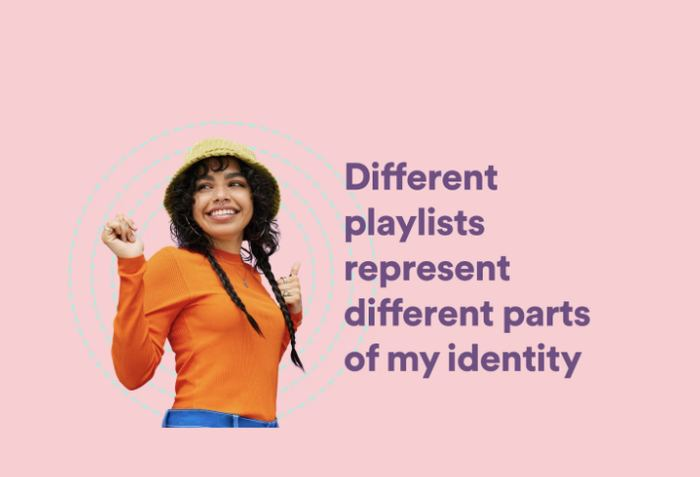
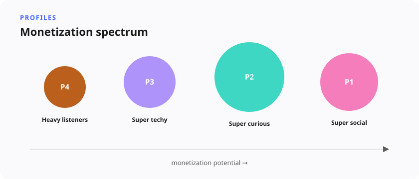
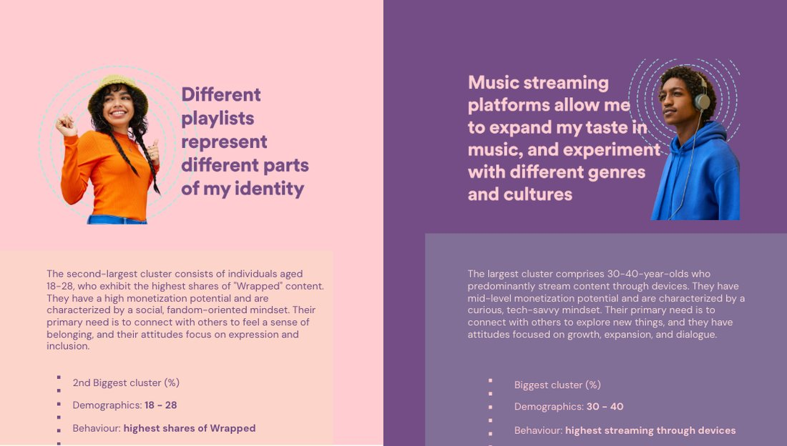

New Audiences
3 priority audience profiles
Behavioral clustering plus a custom mindset survey uncovered two priority audience profiles for a new company bet, then diary and interview work turned them into archetypes product could design for.

Situation
A major cross-org bet had a drafted product direction aimed at growing revenue per user, but no defined audience. Marketing and consumer research had pointed at directions; Insights had to identify who the product was really for, how large those audiences were, and what they needed — for strategy, product, and go-to-market.
Task
Uncover, size, and understand target audiences for the bet so individual contributors and senior leadership could unblock roadmap, squad formation, monetization plans, and positioning.
Approach
The research used a multi-insight, mixed-methods strategy, beginning with a literature review and foundational workshops to form core hypotheses. That was followed by a behavioral cluster analysis run in partnership with data science, alongside an in-app custom mindset survey administered to a stratified random sample of target users, capturing user mindsets, sociability, curiosity, demographics, and monetization propensity. Quantitative insights were integrated into three distinct profiles evaluating willingness to pay, technology adoption, feature interaction, and market dynamics, with cross-functional prioritization workshops held to align stakeholders around the findings. Qualitative depth came last, through a two-week diary study and follow-up interviews revealing underlying user needs, daily habits, and core behavioral archetypes.

Result
The prioritized audience profiles became company-standard input — shaping product empathy and feature prioritization, new squad formation, business plans and revenue framing, branding and GTM positioning, roadmap tailoring, and senior leadership's prioritization of the bet itself as the company's top audience story. The methodology spread as a template for other audience research elsewhere in the company. The clearest lesson: alignment across complex stakeholder systems is costly, sometimes less data yields clearer insight, and audience work is never really finished.

Methodology
Stratified survey design, psychometric-style mindset measurement, behavioral clustering in partnership with data science, diary studies, archetype creation, and cross-functional synthesis workshops — a flagship proof of audience architecture at bet scale.
Skills demonstrated: Construct validity & psychometrics, Segmentation (LCA, clustering), Survey design, Qualitative synthesis (diary studies, interviews)